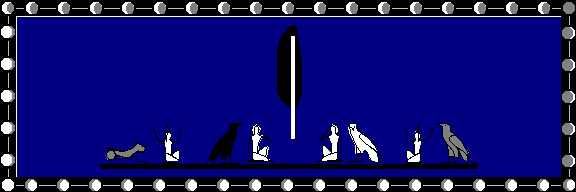

BENEATH AN ASTRAL MOON
© 1998
Introduction --
An e-mail discussion group with the topic of "Hermetic Philosophy", was the setting in which I encountered K. Despite living hundreds of miles apart, we became fast friends and began an e-mail correspondence which thrives to this day.
In early November of 1995, my friend K proposed that we begin a magical project together. He spoke of building "the Astral Temple, where one may repair to Work." He said, "What does it matter that we are separated by mere miles? Let's collect a merry band, from the far corners of netdom if need be, and put together the 'coven' we've all been waiting for! What do you think?"
I took to the idea immediately!
Our first step was to discuss and clarify the parameters of our project. Why were we going to do this? How were we going to do this? What is our goal?
From these and other questions, we concluded that this was an "experiment". Our primary goal was to achieve a "shared astral experience". Even though we held hopes that "shared" might mean jointly experiencing exactly the same visual, acoustic and tactile details; we still resolved to, as much as possible, set aside these and other preconceptions, and approach this project in the true spirit of experimentation.
We agreed to establish an astral locale and to meet there together. After each meeting, we would independently write a report describing our own experiences, and then e-mail them to each other.
Throughout November and most of December, 1995, we went about establishing our astral locale. It came naturally to us both to visualize an outdoor setting, and for a little over a month we traveled there separately, each conducting our independent explorations. We reported our individual impressions of the place via e-mail, but did not meet there together till the night of December 21st, 1995 -- New Moon, followed by the Winter Solstice.
Six months and a dozen joint meetings later, having learned countless lessons along the way and having realized our most basic goals, we opened our experiment to include a third person ("V"). Another six months of meetings and even more lessons later, we were back down to two.
Marking our first anniversary of astral meetings, we resolved to open our experiment again; so in January of 1997, we included a new third-person ("T"). This was so successful that we opened to include a fourth person ("M"), only two months later, in March.
Since this is an experiment, and since we feel we have met with a good degree of success, I thought that a report summarizing the progress of our work would be of interest to other practitioners who similarly find themselves separated by miles but joined strongly by mutual interests. What follows then, are my comments upon our specific experiment and some of the practical lessons we've learned.
1: Methodology --
Consensus process: We have no established hierarchy other than that which evolves naturally when unique individuals with a variety of talents, work together. Our decisions are made by a very unstructured process of group agreement. Bottom line is, we proceed only in directions that we have all agreed upon.
Shared commitment: We each share a basic commitment to pursuing this experiment through whatever twists and turns it may lead. An engaged and motivated interest in the project, seems essential to active participation.
Attitude of experimentation: We are engaged in this project to learn. We are not working to prove or disprove a particular personal agenda or dogma. Instead, we are working through trial and error, and with open minds, to learn what we can about astral meeting. Innovation, and the challenging and testing of our most basic assumptions, are the tools that we nurture. At the same time, wanting to ensure a high degree of consistency in our experiment, we have established the following controls:
Secrecy regarding astral locale: For very practical reasons, we have established a rule of confidentiality. We each agree not to share the details of our astral locale with anyone outside of our working circle. This is necessary because a description of our meeting site is the equivalent of an open invitation to join us! By maintaining this confidence, we retain control over who we share our astral locale with. Following consensus process, no one is invited to join us without the express agreement of all participants.
Communication by e-mail: Since we live so far away from each other, we rely almost exclusively upon e-mail communication. This means that only people with e-mail capability are currently participating. We find that e-mail: #1) simplifies the logistics of seeing that everyone gets a copy of every communication; #2) facilitates the archiving of our correspondence; and #3) makes last-minute scheduling an acceptable option.
Meeting schedule: We meet regularly at 10pm (Pacific Time) on the most mutually convenient night, as close to the actual New and Full Moons as we can manage. Our meetings last anywhere from 30 minutes to well over an hour. This establishes a predictable, yet not overwhelming, schedule of a minimum two meetings per calendar month. Often we meet for the Solstices and Equinoxes, or for personal reasons, so there are also months when we meet more than just twice. There was even a month when we managed to meet only once! Our basic commitment though, is to do our best to meet at each Full and New Moon. There is a special magic in attuning this way to so natural a rhythm as the Lunar cycle, and I highly recommend it! Not only has it established an easy rhythm for our meetings, it has also provided them a more powerful ritual context.
Independent reports: After a meeting, we each write a report describing our experience. There are only two rules regarding our reports: Rule #1) To maintain the control of independent reporting, we avoid reading the reports from other participants until we have completed writing our own. Rule #2) We do our best to submit our reports within three days of meeting. There are no rules pertaining to the format of our individual reports, and in fact, they vary widely in length and style. We encourage each other to be confident in our own peculiarities of self-expression!
Comparative discussion of reports: When all the reports from a given meeting have been submitted, we often (though not always) indulge in a critical comparison of them. We look for areas of commonality between our individual experiences, and assess the progress of our experiment. This process of critical analysis has frequently led to very important changes in our working methods. It is responsible for leading us to each of the most important lessons we've mastered regarding the evolution of our experiment. Experience has taught us that at each turn, we should examine what is and is not working, and then creatively modify our methods in accordance. Firmly rooted in the belief that each individual's experience is an equally valid component of the overall group-experience, we are never demeaning in our analysis of each other's reports. We nurture a working atmosphere of creativity by treating each other with a generous respect.
Archiving of reports and discussions: We save every bit of correspondence relative to our project for a number of reasons. First of all, it constitutes a detailed record of our experiment. Secondly, it provides us with a valuable perspective. Thirdly, our compendium of notes is required reading for new participants, and serves as both invitation and road map. We now publish a journal of each year's notes and issue updated supplements as needed (i.e., when new participants have joined us). These are distributed only to active participants. Our fourth reason for archiving our correspondence, is that we've learned it's a very satisfying thing to do. It provides us with a very tangible, evolving symbol of our otherwise intangible efforts, and this has had surprisingly positive effects upon our motivation when we've faced difficulty.
2: Establishing The Astral Locale --
Assessment of needs: Before we chose our specific astral locale, we discussed our individual and joint needs. Assuming we were to actually succeed in meeting astrally, what sort of work would our locale need to accommodate? Would we eventually involve other people or would we need space only for two? These and other questions led us very quickly to choose a locale that was adaptable.
Natural setting vs. human-made structure: As I mentioned earlier, our choice was a natural, outdoor setting. We made this selection instinctively and without really understanding its consequences. Our desire was for a space with an "unlimited potential", but in finding such a setting, we encountered a different sort of limit -- our inability to encompass the illimitable!
The infinitude of details inherent in a natural setting overwhelmed our ability to arrive at a concise description of our locale. This is an important point, especially in the beginning, because (as experience has proven to us) the more concisely the details of the meeting place are known, the easier it is to reach a truly mutual experience.
A simple structure is easy to describe since there are a limited number of details to consider. But try to describe a natural, outdoor setting and you will find yourself making very general statements that offer more possibilities to the imagination than actual definitions. Our natural response to this situation has been to focus most of our work around specific sites within our larger locale. For instance, we spend much of our meeting time within the confines of a ritual circle that we have established. Our Circle has evolved to a consistent size, composed of a limited number of details, and is a place where we find it easy to attain a mutual focus.
Personally, I have established the habit of transiting first to an easily defined location within the confines of our overall astral locale. For this purpose, I employ an enclosure with a limited number of details with which I am intimately familiar. Once I have firmly established my presence there, I then venture outside and into the infinitude of Nature. Adopting this incremental progression from a stable, solitary environment into one which involves the greater vagaries of relationship, has been the key to my learning how to consistently maintain a grounded presence throughout an astral meeting.
My advice to one initiating an experiment such as this, is that you begin with a simple, though significantly meaningful, focal point for your meetings. An example would be our ritual Circle, or perhaps a simply built, though elegant, temple of some sort. Whatever suits your fancy, let its emphasis be upon simplicity at first. When you have succeeded at meeting in this easily defined locale, then venture outdoors, using your experiences inside your temple as the touchstone "reality" which you will then seek to duplicate amidst more natural surroundings.
Though it may require a bit more effort to manifest, a natural setting offers invaluable lessons, unattainable from within human-made confines. Quite simply, the inclusion of Nature opens the astral locale to The Mystery. I suggest that you experiment with a locale that ultimately offers both options.
Discovering vs. creating: Our choice of a natural setting immediately raised the question of whether we were going to create this locale or discover it. Two things factored into our decision. The first, was that we didn't want a human-made nature-substitute! We wanted Nature's own unique imprint, not just our best approximation. The second consideration was the very sure impression we both shared, that our locale existed prior to our arrival. Our very first experiences instilled a deep respect for our chosen locale -- for its sense of unique self-awareness. So we chose to explore our locale before undertaking any alterations to it, as a sign of our heart-felt respect. I have come to doubt that any other approach would work in the face of Nature!
We continue to explore even now, and are always making new discoveries.
As witnessed by our Circle, we have also indulged in slightly modifying our natural environment, to suit our particular needs. I say slightly, because our Circle existed as an outline in the grass, prior to our arrival, and all we have done is fill it in with details that help us focus. Had we chosen to begin with a limited structure (as I have advised you to do), we would have had to start with creating our Temple or Circle; and then shifted to exploration, only when we had emerged into the outdoors. However it is approached, the tool appropriate to Nature is exploration; and the tool appropriate to a focusing structure, is creation.
Imaging -- establishing the mental foundation: Hindsight is a wonderful luxury. With it, I can distill from our many trials and errors, a set of instructions based upon what eventually worked for us. For brevity's sake, I will focus upon what did work, and leave the amusingly fruitless parts to your imagination!
Step One: Clarify a mental image of your initial locale. If you are following my recommendation of starting with a defined structure, then define that structure in as minute detail as you can. Consider the measurement of its dimensions, the color and texture of its surfaces, the significance of each of its aspects, etc. Be as specific as your chosen locale will allow.
Experiencing -- establishing the astral reality: Step Two: Once you have the mental image defined, step into your locale and begin experiencing its details. This is accomplished by simply giving your astra-mental awareness a body that can function within your astral locale. Then focus your attention upon sensing all the details of your astral locale first-hand.
This will give astral substance to your mental image and build an intimate relationship between yourself and your locale. These first experiences with your locale should be solitary sessions, focused solely upon your individual impressions.
Describing and naming: Step Three: As you develop your personal relationship with the locale, communicate your impressions to the other participants who are also engaging in solitary exploration. Gradually integrate each participant's description, until you each arrive at an experience of the same details in your solitary ventures.
Step Four: When your solitary experiences match, try meeting together as a group.
Step Five: When your group meetings reflect a commonality of events as well as of environmental details, you should finalize the group-description of your locale and give it a name. Stabilize your environment in this way, and you will find it easier to consistently attain a high degree of commonality in your group experiences. As you make changes in your environment or discover new facets of it, be certain that all participants share an awareness of them.
3: Reaching The Established Astral Locale --
Drawing a map with words: Your description of your astral locale is a map which can guide anyone to your meeting place, so preserve its confidentiality well. Treat it like you would a secret password, and reveal it only to those whom you intend to invite into your group's work.
To reach your locale, begin by bringing its description and name into your mind, and concentrate on building a mental connection.
Creative visualization: Boiled down to its simplest terms, you reach your astral locale by consciously placing yourself within its set of details. This is done through the creative visualization of your locale's environment and the shifting of your awareness firmly into it. Experience has shown that there are any number of ways to accomplish this. Each one of the participants in our experiment, has practiced a slightly different technique, but common to them all is that we start with the mental connection and build from there.
Mental and astral travel: In analyzing the various techniques we've employed, I see them as falling into two distinct categories. The simplest approach is that of mental travel, in which one sits quietly and projects only one's mind to the astral locale. The more complex approach involves consciously projecting one's astral form to the locale. Astral travel produces a much richer experience and opens one to levels of sensory perception impossible without the astral body; but it is by far, a more difficult density of presence to attain with consistency. Therefore I recommend that you begin with the easier mental projection, and work gradually toward the goal of an astral presence.
Dealing with distractions: As you shift your awareness away from your physical body and towards your astral locale, you will invariably encounter distractions. The most primary distraction is a wandering mind. For example, you sit to focus on your locale's details and find yourself considering your grocery list instead. When this occurs, it is important to avoid indulging in a frustration-based reaction. Instead, approach this sort of distraction as an opportunity for the creative strengthening of your mental discipline.
The first step in overcoming a distraction of any sort, is to recognize that you are indeed distracted. Briefly define what distracts you, and then willfully turn your attention away from the distraction and back towards the details of your astral locale. Consciously exercising your power to choose your mind's focus, directly strengthens your mental discipline. With practice, it becomes an easy matter to return your attention to its original focus and to then keep it there undisturbed by extraneous thoughts.
While your mind is focused elsewhere, you will still receive occasional sensory messages from your physical body. Loud noises; sudden changes in light intensity; strong aromas; bodily discomforts; the need to sneeze, belch, cough, fart, etc.; and most especially, being physically touched by another person or animal; are examples of physical distractions. Many of these items can be avoided by choosing your meditation space wisely, but even the most isolated quiet-room cannot free you from sensing this annoying itch or that cramped muscle!
When a physical distraction imposes itself upon your awareness, respond as with a mental distraction and begin by first recognizing the distraction. If what has distracted you is the sound of someone breaking and entering, then by all means terminate your meditation and address the distraction directly! If it is only something on the par of a passing car's headlights, then release your focus upon it and return to your meditation. Each such distraction will require a moment of decision in which you must gauge its importance and determine your response. It is often less distracting in the long run to scratch that itch, than to struggle with ignoring it. Whatever the specific circumstance, it is important to approach a distraction calmly and to immediately regain control over your choice of focus.
Each successful dealing with a distraction increases the strength of your internal discipline. To a certain extent, this results in fewer actual distractions, but it will never totally free one from having to deal with them. Experience has shown me that the key to maintaining a consistent density of presence throughout an astral meeting, is not found in the avoidance of distractions; but rather, is to be found in creatively addressing those distractions. Now, when I am presented with the need to cough for instance, I am able to process the distraction with a specific portion of my awareness and I am generally not required to shift my whole focus back to my physical body. If I then cough as my body is urging me to, it does not significantly interrupt my astral experience. Trial and error experimentation has taught me to process distractions very swiftly, and in such a manner that they no longer detract from my chosen focus.
The final category of distraction that I will note, concerns astral travel specifically. When one separates one's astral form from one's physical body, the physical body itself experiences an initial fear. Quite simply, it is the fear of death, as experienced at the cellular level of biologically inherited instinct. The astral separation so closely mimics the process of physical death, that the physical body responds with an initial panic. At first this is a barrier to successful astral travel, as it tends to draw one immediately back into the physical. Treated with the same directness and creativity that I have suggested regarding mental and physical distractions, this barrier is eventually overcome.
With repeated practice, your physical body will learn that its fear is generally unnecessary. I say generally, because in your astral travels, you may find that certain experiences re-ignite this physical fear response. The consciousness of the solitary physical body (i.e., from which you have separated your mental and astral bodies) is relatively primitive and animalistic. Very like a domesticated pet, the physical body's consciousness learns to trust and to release its instinctual fear only after experiences have affirmed for it the trustworthiness of its master. Such trust is always weighed against instinct and so it is never absolute.
Increasing your astral presence: Travelling with your astral body opens you to a range of sensory perception very similar to what you experience with your physical body. Mental travel on the other hand, allows only for sight and a form of mental hearing, and there is a marked absence of spontaneous tactile sensations. Therefore, to increase your astral presence at your locale, concentrate upon using your astral senses to perceive your astral surroundings. Feel the astral floor/ground beneath your astral feet; feel the movement of your astral limbs; sense the temperature and smell of the astral air; touch the different astral surfaces around you. In this way, you will clarify your surroundings and increase the intimacy of your contact with them.
An aspect of the astral sensoria which does not have a physical parallel, is what I call the "astral speak/feel". This organ of perception is tied primarily into the astral organs of sight and hearing. Speak/feel allows one to look at an astral object and receive from it an audio-visual communication that is filled with intimate details, feelings, thoughts, etc. I find that using this specifically astral sense, increases my astral presence dramatically. With practice, I have found it easy to tie all my astral senses into the speak/feel, increasing the range of information perceived to include touch and smell as well. At each level of the speak/feel, the information perceived is felt emotionally; and at the same time, processed intellectually.
Speak/feel is an organ of communication -- of perception and expression. One can, with practice, learn to project one's own unique speak/feel message, and converse in this way with the astral surroundings. One of my most blissful memories is of a speak/feel conversation with a meadow of grasses -- I perceived such indescribable joyousness! I recommend a speak/feel conversation with your astral locale as the most potent way to increase your astral presence.
4: Experiencing The Astral Locale --
Projection vs. "reality": There is one unavoidable question inherent in this sort of experiment. In fact, it forms the very foundation of our approach. The question we each ask ourselves every time we venture to our astral locale is: Are my experiences and perceptions merely delusions, projected by my active imagination; or do they reflect actual events and things?
Moved by this question, several occult Traditions have devised techniques for testing or proving an astral or mental vision. Beyond the fact that they introduce an element of challenge and focus one's attention upon this central question, I don't think they are themselves proof from self-delusion. Repeated experiment and the experiences which result, are what truly teach one to discern a self-deluded projection from a genuine experience of your astral locale.
I know of no better, more powerful an aid to answering this question than receiving a second, or third, or fourth, opinion! When we share the reports of our group meetings, we get a chance to see if our experiences in any way matched those of the other participants. Instances of commonality have led us to perfect our methods, resulting in less self-delusion and greater mutuality evinced in our reports.
The high degree of commonality that we have achieved satisfies us presently. From these successes, we are learning to trust our process and our results -- but like the domesticated pet I mentioned earlier, our trust is by no means absolute and we question it at every turn.
In the beginning of our experiment, I focused closely on discerning my projections from the astral reality. I ended up spending a couple of meetings completely obsessed with the issue, and these were the most delusional of all! I learned quickly that my very correct attitude of questioning was unfortunately being applied at an incorrect stage. It seems that the proper stage for analysis is actually after an astral meeting. During the meeting itself, it was clear that I should trust and experience whatever came, and save the critical dissection for the discussion of our reports. For it was clearly from the post-report discussions that we were learning the lessons which were bringing us closer to a truly mutual experience. I determined to "act now, analyze later", and have been so impressed by the results of this approach that I hold to it even now.
One of the greatest barriers to achieving a non-projected experience is too tight a hold on your preconceptions. Your expectations as to what will or will not happen can easily lead you into a self-deluded projection. This is especially true when you experience things that don't fall within your frame of reference. A natural response is to begin translating them into symbols which fit your understanding. This tends to, at the very least, limit your experience -- and once you reach the limits of your understanding, removes you to your own expectation-based fantasy.
Levels of commonality: An area which has tested nearly every one of our preconceptions has been our search for commonality in our meetings. We learned that discerning commonality in an astral setting is a far different matter than when judging it in a physical setting. In a physical setting we make broad assumptions, based upon the evidence of our trusted physical senses, that when several individuals come together, they experience commonality in their perceptions. There is a subtle and generally unquestioned agreement that each person present sees the same surroundings. In our astral setting however, this basic degree of commonality is missing and we are relying on our less trusted astral and mental senses.
Upon closer examination, the commonality that we assume occurs in a shared physical setting, breaks down when each of the individuals present describes what they perceive. Vast differences will be seen between the descriptions of both the surroundings and the events. This reveals how utterly personal, perception really is. As each person views a particular feature or experiences a particular shared event, it will raise a unique set of thoughts and emotional responses. In effect, we each see a common universe, but in divergent ways. Our perceptions often diverge radically when it comes to our emotional impressions and our subsequent thought processes.
Experience has taught us to look for three levels of commonality in our meetings:
Level One: Meaning This is the most basic level of commonality and also the most difficult to analyze rationally. For example: in one meeting I ritually cast our circle, using standard techniques shared by Wiccan and Hermetic traditions. This was perceived differently by each of the other participants .
T, who had the least familiarity with myself and with the techniques I was employing, perceived it as candles being lit at each quarter of our circle and as a general feeling of "things coming together." Even though there was no agreement on the flow of events, nor upon any of the minute details, the meaning of her experience certainly matched my real-time actions.
Over and over, we have learned the lesson that we each perceive astral events through the lens of our own unique internal symbol-language. Analyzing our reports has meant that we've had to learn each other's language and idiom, and then translate, often intuitively, into the language of essential-meaning shared by all. At this level, we have achieved at least 90% commonality in our meetings over a two year span.
Level Two: Flow of events Here, not only is there a sharing of essential-meaning, but also the rhythm and sequence of events is shared. For example, the same ritualized circle casting was perceived by M (with whom I am closely acquainted) as a series of specific actions that enlivened and ignited our circle. Even though she had very little familiarity with the specific techniques I employed, she clearly described the sequence of my ritual casting and its essential meaning. She did not however, perceive the details of what I was doing. At this level, we have achieved a 60% commonality in our meetings over a two year span.
Level Three: Minute detail This is the most comprehensive and easily analyzed level of commonality. It is also the least common in our meetings, occurring perhaps only 30% of the time. For example, my ritual circle casting was perceived by K in minute detail, 90% of which matched my real-time actions. Unlike my relationship with T and M though, K and I speak a more similar internal symbol-language, having both studied and practiced some similar magical traditions. In short, the greater the similarity between the symbol-languages of the participants, the greater the degree of commonality in perception of events.
Synchronizing time and place: When we want to meet with someone physically, we simply state a place and time for our rendezvous, and at the correct time we arrive at the chosen location. It's a very straight forward proposition in the physical world, but in the astral realm, time and place are vagaries determined by intention and attention, rather than the certainties of physical laws.
Syncing place in the astral realm is simply a matter of intentionally visualizing the same astral locale. However, it does little toward reaching a commonality of experience to meet at the same place but at different times! Carefully syncing the astral time of your meeting will greatly increase your chances for commonality.
In a natural setting, this is fairly easily achieved through all participants visualizing the same season, time of day and phase of the moon. In a man-made, indoor setting, you must build in some feature which will help you determine the time -- perhaps a clock of some sort or a window through which you can view the sky.
Working together at the same moment in physical time aids in the syncing of the astral time, and is by far the best course to pursue. However, it is not essential. Experience has proven that it is possible to project back in physical-time terms, to the ever-present astral moment of meeting, and then engage in a real-time experience of events.
K was the first of our group to explore this possibility. One month, he had missed our Full Moon meeting and decided to attend on the following evening. He projected his awareness to our astral locale with the intention of arriving at the moment, 24 hours earlier, when our Full Moon meeting began. To everyone's surprise, his report of that meeting displayed no less commonality than usual! We had all perceived his presence, even though it was a projection from a time yet to occur in our experience. He likewise had accurately perceived our meeting and had even engaged in shaping the real-time flow of events within a time that had already occurred.
This practice works best when going back in time to a meeting that has passed, but is less advantageous when a meeting has yet to occur and one is attempting to reach forward in time. While either journey through time is possible in the astral and (even more so) in the mental realms, the possibility of self-delusion seems to increase the further into the future one strays.
My advice is that you first develop the discipline of working together in real-time before experimenting with astra-mental time travel.
A final aspect of syncing in astral time is noting the passage of time during the meeting. Astra-mental time does not flow with the inexorable regularity of physical time. The measure of astra-mental time is dependent upon the intensity of the ideas and emotions the experience encompasses. It is therefore uneven, irregular and unpredictable, unlike physical time. At first this fact can be disorienting as you find only half an hour of physical time has passed during an astra-mental experience encompassing many "hours" of events. By noting the physical time you began your meeting and the physical time you returned to full bodily consciousness, and then comparing it's length to the perceived passage of astra-mental time, you will eventually come to understand the connection between these two different aspects of time. This discipline will greatly increase your ability to sync with others in astra-mental time.
Working together: Learning how to come together astra-mentally, though a great and rewarding labor in its own right, is only the first step. The second, even more challenging step is to learn to work together effectively within your astra-mental environment. Once we had mastered the first step to our satisfaction, the question arose: "What now?" The answer was obvious: "Do something."
The first action we undertook that went beyond simply arriving together at the same astra-mental time-place, was to pursue a joint focus upon a simple object. For us, this object was a specific bird's feather, one that we were all familiar with and could therefore visualize with equal clarity of detail. Any simple object will do as long as all the participants agree upon the details ahead of time.
We have come to call this our "feather focus" and we usually begin our meetings with a few minutes sitting around our feather, focusing upon it in unison. This has the effect of bringing us together into very close mutual proximity to the exact same moment of astra-mental space. Not only are we intentionally syncing at the levels of meaning and flow of events, but also very clearly at the level of minute detail.
Even though the differences between our initial striving to reach the same astral-mental moment, and our subsequent feather-focus, are subtle, they are nonetheless significant. They represent a more proactive group-approach to the astral locale.
A very natural result of any group of people binding its attention upon a common focus, is the multiplication of energy. This is very noticeable at the astra-mental level and can produce significant physical effects if the level of energy generated exceeds the personal limits of the participants. We've each succeeded in making ourselves physically nauseous, dizzy, or overloaded with vibrant energy, at one point or another during this project! Each time we experienced this sort of physical discomfort, it was due to our exceeding our own limits of tolerance. From this we have learned to protect ourselves and to carefully stretch our limits in small increments.
I recommend that you approach this natural multiplication of energy very consciously and with a moderate degree of caution. Begin by joining hands in a circle at your astral locale and cast your attention to a mutually agreed upon object. When you are all well focused together, take careful note of the group's energy level as well as your own personal level.
Now gently and mutually begin to circulate a current of energy clockwise (deosil) around your hand-held circle. Maintain a personally comfortable level of energy flow for a few minutes, one that does not stretch your limits.
Another way of putting it, is that you should allow only a comfortable amount of the group's energy to reach you. If there is more energy available than you can comfortably handle, then consciously limit what you accept into your own astra-mental body. This is simply a matter of conscious intention; of willing it to be so and making it so.
When you have acclimated yourself to this comfortable level, then open yourself to a little more of the group's energy and slowly stretch your limits of comfort. As your limits stretch, so will your ability to consciously work with this energy toward creative ends.
Once you agree, as a group, that you have reached a state where you can work directly with the group energy you raise, plan a specific task for that energy. An example might be a simple sharing of healing energy, or perhaps a more complex ritual of some sort. I suggest you start simply and work your way up to the more complex options as the need arises.
Create uses for your group's energy that satisfy real and present needs. This guarantees that you will be able to gauge your effectiveness by verifying whether or not there were any tangible results. For example, choosing a vague project such as world peace, while certainly noble, guarantees that you will have little upon which to gauge the effectiveness of your group working. Practicality and innovation will more thoroughly engage your group's interest.
Possibilities: There are immense possibilities inherent in an astral locale simply due to the fact that it is built of the astra-mental substance. This substance has infinite potential and offers us the opportunity to explore whatever possibility we can imagine.
At its most basic level, an astral locale offers an immense opportunity for learning about the universe and the self. It is a realm which, if nothing else, supports the enacting of cathartic psycho-dramas which can reconnect one to an inner source of deep personal wisdom.
It is an ideal setting in which to carry out ritual workings and even long-range magical projects. For example, it could serve as a valuable supplement to a correspondence course in magical training in which actual lodge-work was impossible.
The possibilities are truly limited only by the imagination! The tool of imagination and its natural process of limiting the astra-mental substance, is what allows us the ability to realize the astra-mental substance's potentials. Creative innovation is by far the most productive tact when pursuing this sort of work.
5: Introducing New Participants --
When K and I had reached a satisfactory success in our astral meeting project, we decided to open our experiment and include at least one other person in our workings. We felt it was time to see what effect a third person would have upon our overall experiment and upon the astral locale itself.
The whole process was very gratifying and greatly enriched our astral-meeting experience. Even though the first person we invited left the group (amicably) only six months later, we felt that the benefits that came from enlarging our group were worth the effort involved. Since that time, we have successfully integrated two other participants into our group, bringing our current number of active participants to four.
Our three efforts at opening our group have taught us some valuable lessons. We found that there are four basic factors to consider: 1) Finding one's place in an already established group dynamic is a difficult and often intimidating task. Great care needs to be taken in warmly welcoming a new participant. 2) Likewise, it is often difficult for an established group dynamic to open itself to the change which a new face brings. The group must remain acutely aware of its tendency toward inertia and actively embrace the opposite pole of openness-to-change. 3) There are logistic considerations such as making sure the printed materials reach the new participant and that they are informed of meeting times, techniques, etc. 4) Each new participant will naturally cause the astral locale to change slightly. Just as the original group shapes the locale, so also will the addition of a new perspective to some extent re-shape that locale. A balance must be struck between respecting the established locale and openness to growth.
Our experiences quickly led us to establish a well defined process for introducing new participants. It has worked successfully both of the times we've followed it, so I recommend it to you.
The role of guide: Central to our process of integrating a new participant into our group is the concept of sponsorship. Each candidate has one person from the established group who will act as initial liaison and guide. This guide is the candidate's entry into the group dynamic; and likewise, the guide is the group's entry into the inevitable change of it's own dynamic.
The guide is responsible for getting the introductory material (a copy of our Journal) to the candidate and in every other way facilitating their inclusion into the group meetings. However, this role should terminate once the candidate has successfully met with the group at the astral locale. It is not meant to be a long-term hierarchical role; instead, it's to be one of advocacy and warm welcoming. Once welcomed though, the candidate becomes an equal participant.
In our experience, the role of guide was necessary for only the first two months after the initial invitation to join. Despite its brevity, it is still a crucial role. I advise against opening your group to new participants if there are no members of your group willing to commit the time and effort required for this role. In that case, it is best to wait till someone is available for the task.
Selection and invitation: When a member of our group proposes someone as a candidate, we must all agree upon their inclusion before we offer that person an invitation. I must confess that in practice, the person who proposes the candidate ends up acting as the primary guide for that candidate.
I have proposed two candidates -- one who stayed with us for six months and one who has been with us for almost a year now -- and I'm considering two others. What they all share is a strong interest in the idea of our astral meeting project and that is my primary criteria for candidacy. For example, M repeatedly stated her interest and inquired for over a year as to the project's progress. The other two I'm considering for inclusion in our group have expressed a similar consistency and depth of interest in the project.
Other important questions are: Am I personally interested in working on such an intimate level with this person? Would they really benefit from participation? Does this person realistically have the free-time available in their busy lives to commit to the project?
Once group consensus has been reached on a candidate, the guide proffers an invitation. If accepted, the candidate is sent a copy of our Journal-to-date. This is a detailed record of our work and opens with a description of our astral locale.
Solitary exploration: As the candidate reads our Journal's descriptions, they will naturally begin to formulate a mental picture of, and an emotional relationship with, our astral locale. This marks the beginning of a phase of solitary exploration wherein the candidate attempts to more and more clearly reach the astral locale on their own. The candidate works at building a personal connection with the locale.
First two-person meeting: Should the candidate have difficulty reaching the astral locale, or conversely, when the candidate has successfully reached the locale, a meeting at the astral locale between the candidate and the guide should be arranged. At least one two-person meeting should be attempted before attempting a full-group meeting. If there are problems, then a series of two-person meetings should be pursued until the difficulties are resolved.
First group meeting: Once the two-person meeting goes well, it is time for the candidate to attempt joining in the regular full-group meeting. The established group should take care that the candidate does not exceed their limits and become overwhelmed by the group's energy. Likewise the candidate should remain conscientious of their own limits and not exceed them.
When and if the candidate succeeds in joining the group meeting, they cease to be a candidate (assuming no one raises an objection) and they become an equal participant.
Epilogue --
I hope my words encourage you to engage in a similar work. The rewards far, far outweigh the effort required! And the work, though it may sound overwhelming and complex, is really quite an easy labor.
December 21st, 1997 marked two years of meeting at our astral locale. Our project continues to evolve and we are presently moving toward a more relaxed approach to our meetings. In many ways, we are letting go of the "project" part of our work and simply focusing on the "work" part.